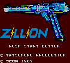
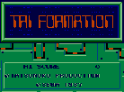

Zillion - Sega Master System Games

- US Title: Zillion
- Genre: Platform game
- FAQ available at
Lond Bell
Controls
- A button: Jump
- B button: Shoot
From Doug Cranston:
Zillion was started by Sega in the early 1980's as a toy called a Zillion Gun; it was a laser-tag gun with a sensor
pack that looks exactly like the ones in the anime. To promote this toy, Sega commissioned a manga, which did well,
and to capitalize on the popularity, Tatsunoko made an OVA series. This game is a lot like Metroid. You have to
enter rooms, find pieces of a code, avoid security, and input the code in the computer in order to advance to other rooms.
The objective of the game is to find Zillium for your guns, rescue your partners Apple and Champ (who you can control),
and find five self-destruct disks to destroy the base. It had pretty good renditions of the anime's music, rather than
generic stuff.

- US Title: Zillion 2: The Tri-Formation
- Genre: Platform game
- FAQ available at
Lond Bell
Controls
- A button: Jump
- B button: Shoot
You must guide your hero through the various levels battling the enemy along the way. Not a
spectacular game, but fun to play anyway.
Anime Video Game Resource Center © 1998 by Luis A. Cruz